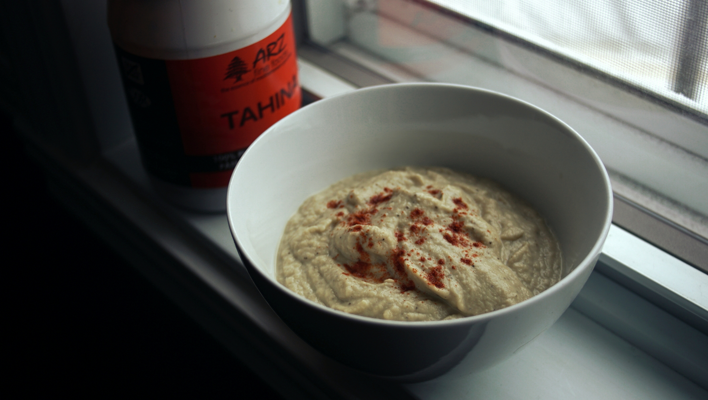

roasted eggplant dip
4 servings — 50 minutes
A simple roasted eggplant dip recipe. Roasted the garlic is optional, but it gives the dip a deeper, more complex flavor, while diminishing the pungency of the garlic.
This recipe is ideal when served with flat bread or raw vegetables, it's also good if served with crackers. Optionally, you can add roasted green peppers and other vegetables to further augment the flavor and nutrition of the dip.
Add-ins : Add 20 g (~1/2 cup) of chopped parsley and/or 2 diced tomatoes for extra texture and flavor. For a more complex (and sweet) taste, add 45 ml (~3 tbsp) of pomegranate molasses. You can also use grape molasses.
Garlic : The garlic doesn't need to be roasted, you can use it fresh. If you do this, you will have to use ~4-5 cloves instead of the whole head. Use a mortar and pestle to crush the peeled garlic into a paste before adding it to the rest of the ingredients.
 garlic 1, whole head
garlic 1, whole head olive oil 5 ml
olive oil 5 ml
roasted garlic
- Preheat oven to 240 °C (460 °F).
- Remove outer leaves of whole garlic head, keep the inner skins on and don't pick the cloves apart. Slice off the tip of each garlic clove, so that some flesh is exposed, and rub the tops and sides with some vegetable oil.
- Wrap garlic head in tin foil. Keep aside.
 eggplant 2 large
eggplant 2 large tahini 30 ml
tahini 30 ml- olive oil 15 ml
 lemon juice 45 ml
lemon juice 45 ml cumin seeds 2.5 g, ground
cumin seeds 2.5 g, ground salt 1.25 g
salt 1.25 g black pepper 1.25 g
black pepper 1.25 g smoked paprika 15 g
smoked paprika 15 g
eggplant dip
- With a fork or knife, poke some holes in 2 large eggplants, and lay them over a baking tray along with the garlic head in tin foil. Roast garlic head for 45 minutes, eggplant may require an additional 10 minutes (depending on your oven).
- Allow the eggplant and the garlic to cool.
- Remove the flesh from the skins of both the roasted garlic cloves and eggplants. Transfer them to a food processor. Add 30 ml (2 tbsp) of tahini, 15 ml (1 tbsp) of olive oil, 45 ml (3 tbsp) of lemon juice (or juice of 1 fresh lemon) and 2.5 g (1/2 tsp) of ground cumin seeds and process into a smooth puree.
- Season with 1.25 g (1/4 tsp) of salt, black pepper and some smoked paprika.